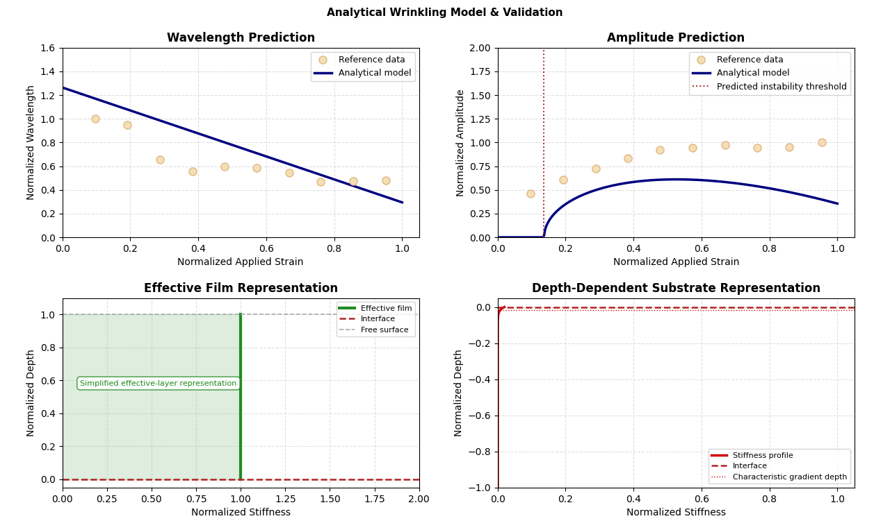
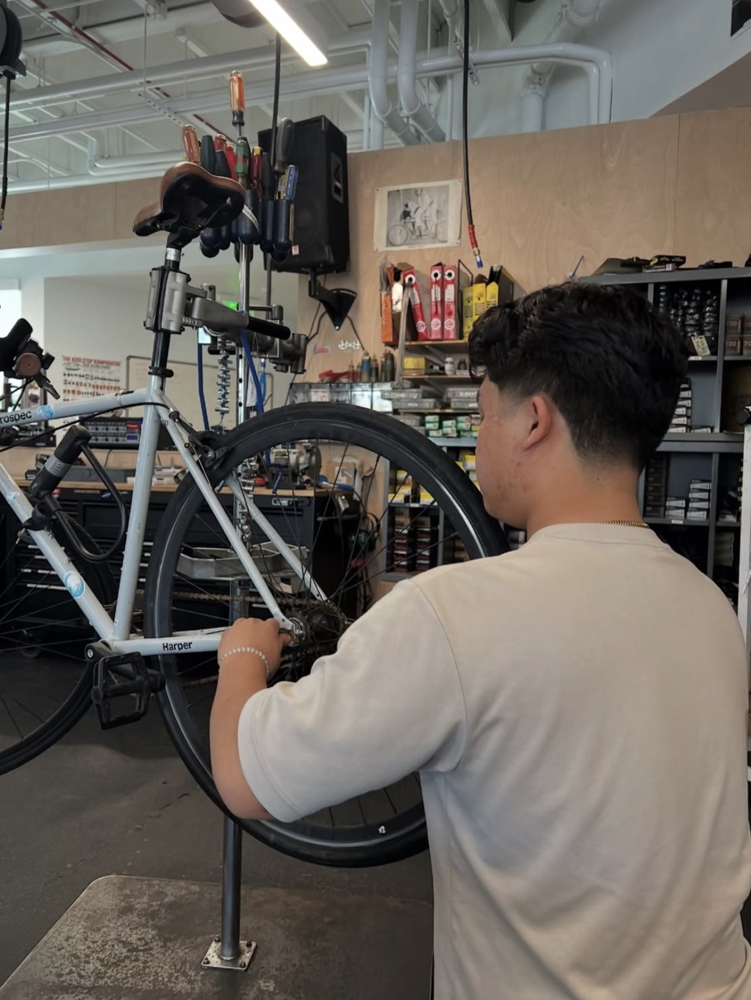

SELECTED WORK
Engineering Projects

RESEARCH · NONLINEAR FEA
Large-Deformation Wrinkling FEA
Nonlinear finite element modeling of strain-dependent surface instabilities across multiple loading conditions.
View Project →

COMPUTATIONAL MODELING · PYTHON
Analytical Wrinkling & Model Validation
Physics-based Python model for predicting strain-dependent wrinkle behavior, with numerical optimization and cross-validation against independent reference data and finite-element trends.
View Project →

MECHANICAL DESIGN
Dual Stuffing Box
Mechanical design of a dual-packing assembly incorporating service access, threaded interfaces, machining constraints, and manufacturing documentation.
View Project →

MECHANICAL DESIGN · FEA
High-Pressure Flow Tee
Mechanical design and structural analysis of a pressure component incorporating multiple flow and threaded interfaces with manufacturing constraints.
View Project →
HANDS-ON EXPERIENCE
Field & Mechanical Experience
Practical experience working with real materials, mechanical systems, tools, construction constraints, diagnostics, and field execution.

CONSTRUCTION · HARDSCAPE
NorCal Concrete & Landscape
Multi-year field experience in concrete, masonry, hardscape installation, site layout, and construction execution.
View Experience →

MECHANICAL SERVICE · DIAGNOSTICS
UCSB Bicycle Shop
Hands-on experience diagnosing, repairing, and maintaining bicycle systems while helping students and staff understand mechanical issues and preventative maintenance.
View Experience →
ABOUT
About Me
Physics student at UC Santa Barbara focused on mechanical engineering, finite element analysis, CAD, simulation, and computational modeling.
My work combines physics-based modeling with practical engineering design, including nonlinear finite element analysis, mechanical CAD, computational modeling, and manufacturing documentation.
TECHNICAL SKILLS
Engineering Toolkit
Tools and methods I use across mechanical design, simulation, computational modeling, testing, and hands-on engineering work.
MECHANICAL DESIGN
CAD & Design
SIMULATION
FEA & Analysis
PROGRAMMING
Scientific Computing
TESTING & HANDS-ON
Experimental & Field Work
CONTACT
Get in Touch
Interested in discussing engineering, simulation, research, or internship opportunities? Feel free to reach out.